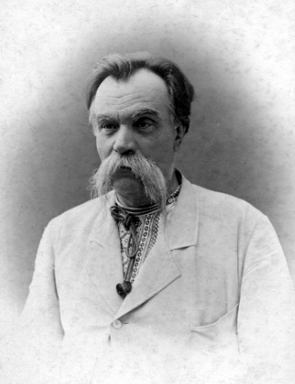
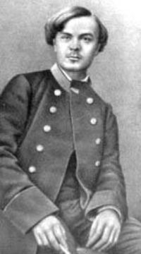
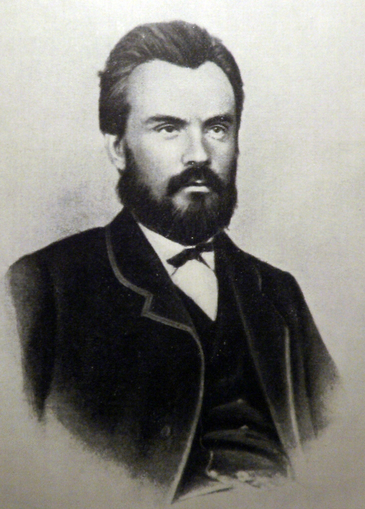
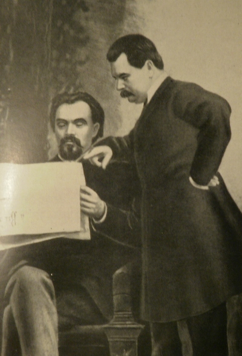
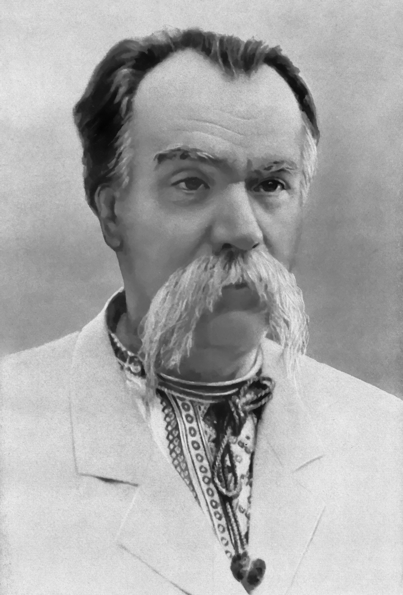

1840 — 1904
Письменник, драматург, режисер, актор і громадський діяч, який присвятив своє життя розвитку українського театру та культури
Михайло Петрович Старицький народився 2 грудня 1840 року в селі Кліщинці на Полтавщині (нині Черкаська область) у родині дрібного поміщика.
Родина Старицьких належала до давнього козацького роду. Батько помер, коли Михайло був ще дитиною, і вихованням хлопця опікувався його дядько.

Після смерті батька Михайла взяв під своє крило дядько — Василь Лисенко, який доводився рідним братом матері композитора Миколи Лисенка.
Михайло Старицький та Микола Лисенко були двоюрідними братами. Їхня дружба та співпраця тривала все життя і стала одним із найплідніших творчих союзів в історії української культури. Разом вони створили фундамент українського професійного театру та музики.
Ще у студентські роки Старицький виявив себе як пристрасний патріот та організатор. Він став одним із засновників українського студентського руху та брав участь у діяльності таємних громад.
Літературний талант Старицького проявився ще в юності. Його перші твори були надруковані в журналах «Основа» та «Черниговский листок».
Поезія молодого автора відрізнялася щирістю почуттів, глибоким зв'язком із народною творчістю та громадянським пафосом.
Перші вірші Старицького були сповнені любові до рідного краю та співчуття до простого народу. Уже в них простежувався його самобутній ліричний стиль та майстерність володіння словом.
Київська Громада — товариство українських інтелігентів, яке ставило собі за мету розвиток української мови, культури та національної самосвідомості.
Михайло став одним із активних діячів Громади. Він організовував літературні вечори, сприяв виданню українських книг та брав участь у просвітницькій роботі серед народу. Саме тут остаточно сформувалися його погляди на необхідність українського театру.
Громада стала тим середовищем, де зародилася ідея створення професійного українського театру — мрії, якій Старицький віддав усе своє життя.
Дружиною Михайла Старицького стала Софія Лисенко — донька його дядька Василя та рідна сестра Миколи Лисенка.
Софія була не лише вірною дружиною, а й надійною помічницею у творчій діяльності чоловіка. Вона поділяла його погляди на українську справу та активно долучалася до культурного життя.
У родині Старицьких виросло одинадцятеро дітей. Дві доньки — Марія Заньковецька (прийняла сценічне ім'я) та Оксана — стали видатними українськими актрисами.
У 1882 році відбулася історична подія — Старицький отримав дозвіл на створення української театральної трупи. Це стало початком професійного українського театру.
Театральна трупа Старицького об'єднала талановитих акторів, які вірили в українську справу. Репертуар складався переважно з власних п'єс Старицького та творів інших українських авторів. Вистави мали величезний успіх серед глядачів по всій Україні.

Трупа Старицького вела мандруючий спосіб життя — актори подорожували містами та містечками України, несучи українське слово та театр народу.
Творчий союз Старицького та Лисенка — один із найвизначніших в історії української культури. Разом вони створили справжні шедеври.
Михайло писав лібрето до опер Лисенка, створюючи поетичні тексти, які ідеально поєднувалися з музикою. Його слова оживали в музиці.
Серед найвідоміших спільних творів — опера «Наталка Полтавка», «Різдвяна ніч», «Утоплена» та «Тарас Бульба». Ці твори стали класикою української опери.

Драма про трагічну долю кохання, зумовлену соціальними умовами
Популярна п'єса, що стала одним із найвідоміших українських водевілів
Комедія, сповнена народного гумору та яскравих характерів
Сатирична комедія на соціальну тематику
Драма про українську дівчину-невільницю в турецькій неволі, що стала справжньою перлиною драматургії
Обробка повісті Гоголя для сцени — поєднання містики та народного гумору
Легка комедія, яка здобула величезну популярність на сцені
Одна з останніх п'єс, що підсумовує творчі пошуки драматурга

Драма «Маруся Богуславка» вважається вершиною драматургічного таланту Старицького.
Сюжет розповідає про українську дівчину, яку захопили в полон турки. Ставши наложницею султана, вона не забула свій народ і допомогла козакам-невольникам врятуватися.
Твір став символом жертовності та вірності своєму народу. П'єса й досі ставиться на сценах українських театрів.
Творчість Старицького вирізнялася поєднанням кількох важливих рис:
Глибоке знання народного життя, використання фольклору, пісень, звичаїв. Персонажі — живі, справжні люди з народу.
Майстерство створення напружених ситуацій, глибоких конфліктів та емоційних сцен, які зворушували глядачів до сліз.
Тонкий, щирий народний гумор, що переплітався з драматичними моментами, створюючи яскраву картину життя.
Крізь кожен твір проходила ідея любові до України, віри в її майбутнє та гордості за свій народ.
Старицький був не лише письменником і театральним діячем — він був будівничим української національної культури.
Шлях Старицького не був легким. Доходилося долати численні перешкоди:
Емський указ 1876 року забороняв українську мову в пресі, театрі та освіті. Старицький постійно боровся з цензурою та перепонами.
Театральна справа була фінансово невигідною. Старицький часто вкладав власні кошти, але трупа постійно потерпала від браку коштів.
Важка праця, постійні подорожі та стреси підірвали здоров'я. Останні роки життя були особливо важкими для драматурга.
Деякі колеги критикували Старицького за «комерціалізацію» театру. Проте він вірив, що театр має бути доступним народу.
П'єси Старицького ставляться в театрах і донині. Його твори вивчають у школах та університетах. Він залишається одним із найважливіших діячів української культури XIX століття.
«Він був одним із тих, хто відроджував українську націю через мистецтво та слово» — так говорять про нього історики культури.
Михайло Петрович Старицький · 1840 — 14 (27) квітня 1904